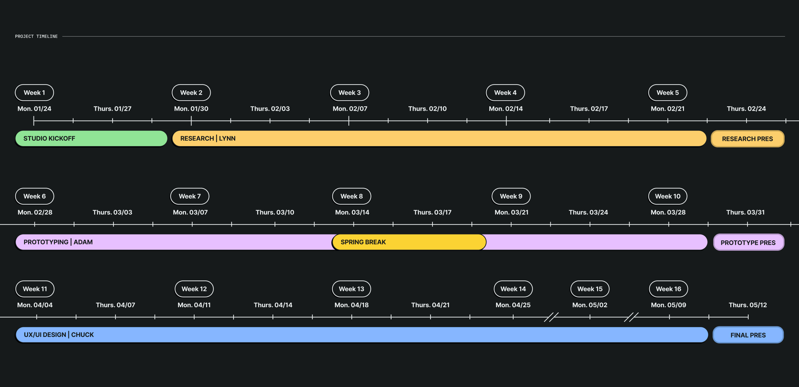
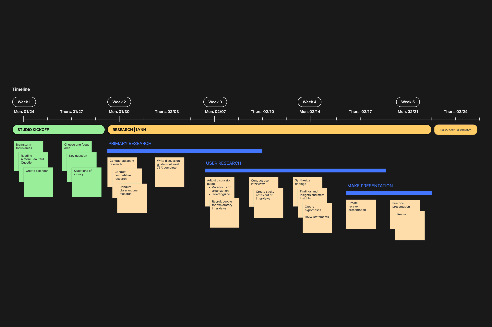
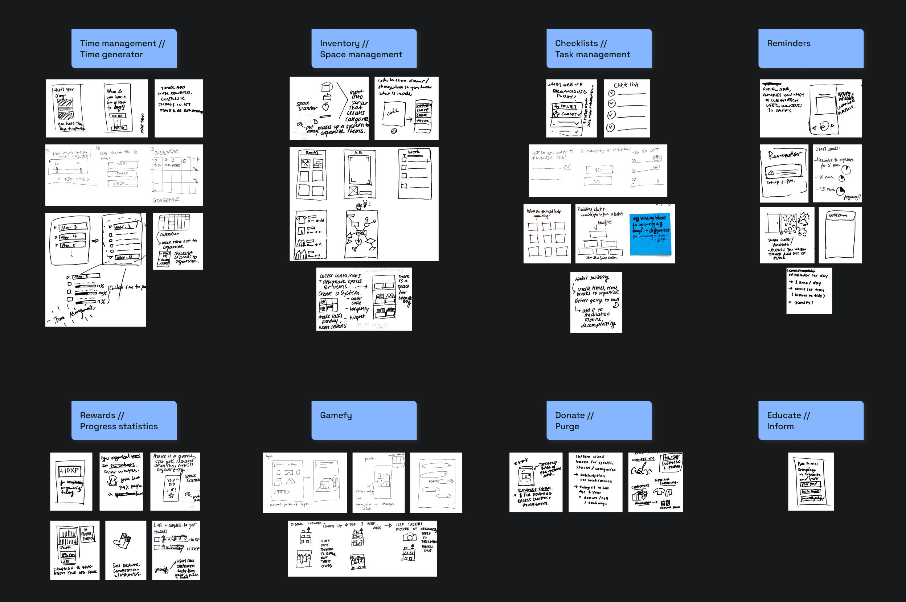
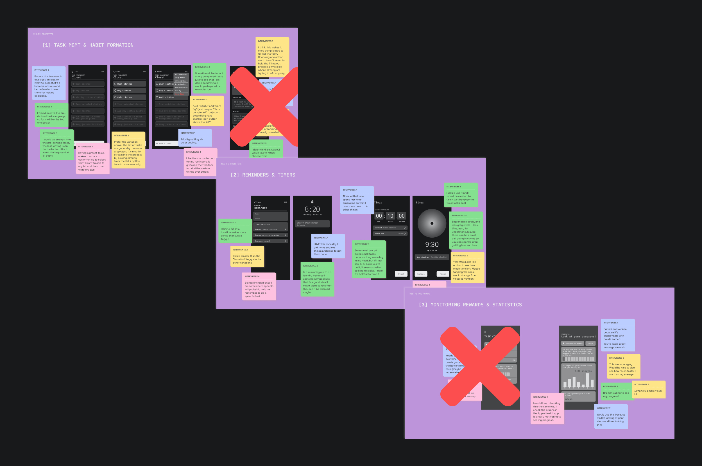
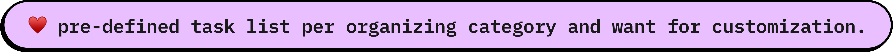
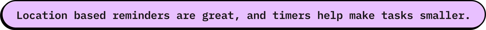
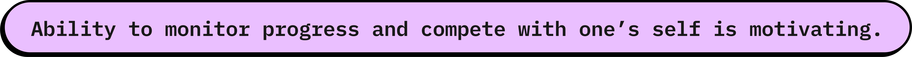

Capstone — Untitled WIP
00 — Overview
Welcome to my Untitled Capstone project I am currently working on in the MPS Communication Design program. The project is divided into 3 parts: Research, Prototyping, and finally UX/UI Design. I'm currently working on the final phase. Please come back later for more. :)
01 — Project Context
02 — Research
Through exploratory interviews, I wanted to understand people’s behaviors and habits around having systems for organizing and tidying physical spaces as well as digital organization and their impact on mental health.
Synthesis of overarching themes
01
Frustration and overwhelm
People feel overwhelmed and anxious when preparing to organize; while organizing; and failing to organize due to being overwhelmed by the process or mess, rearranging things, and even delaying organizing.
02
Routine and time management
People don’t have daily routines around organizing, and the duration of organizing depends on levels of motivation, productivity, energy, and disorganization. It can also depend on the task itself being a daily 5-30 minute task or organizing a mess which would take a few hours.
03
Feelings of control and self-care
When people organize, they feel a sense of control. There is also a feeling of relief afterwards which motivates people to take on other tasks.
04
Effects on mental health
Organizing, purging, and carving out time to organize have positive effects such as being good for your well being and mental health, feeling like a metaphorical weight is lifted, and feeling emotionally and physically lighter.
05
Prompts to organize
Organizing can be a reaction to something such as mental health (depressive episodes), things no longer serving their function or making sense, things not being used or no longer needed, visual clutter, a need to remember where things are, or an accumulation of things that need to be purged.
Actionable "how might we" statement
How might we get people to build a habit around organizing?
03 — Prototype
Based on my "how might we" statement, I ideated with my classmates on possible ideas for my digital product and its focus area. After several ideation sessions, I grouped and synthesized the sketches into categories. 5 low fidelity prototypes were created from the ideas that repeated the most.
After testing these 5 lo-fi prototypes with 4 users, I combined a few features and narrowed them down to 3 prototypes to take into middle fidelity. These 3 mid-fi prototypes were A/B tested on 4 users to understand which variations of the features were preferred.
Conclusions
  04 — UX/UI Design
In progress 🐒